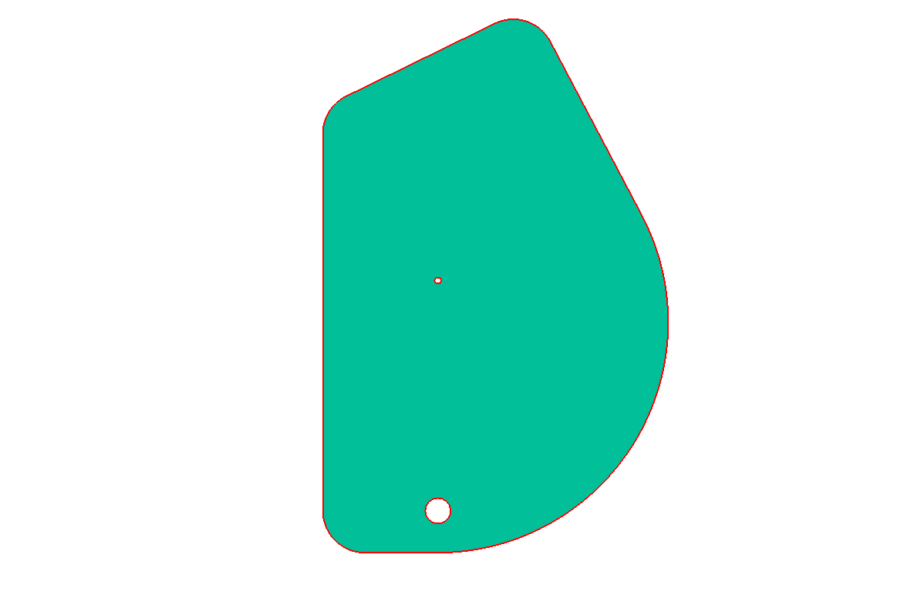

Open Source Hardware & Tools for Machines
We are embarking on a journey to provide open source hardware to make common tools and machines easier to use, predict and set up. We are providing CAD plans, PCBs, schematics, and products that enhance the abilities of machines and provide people with data and feedback. We aim to create safer environments with regards to tool usage, expand the abilities of users, and increase the longevity of machines common to woodworking, metalworking, CNCing, and more!
Casters

Make your own simple wooden casters using this plan. They are made from simple ¾" plywood and use minimal hardware from local store. The caster is a simple design that can be bolted in place or have a carriage bolt (length depends on application) swivel around copper pipe. The wheel is just 2 pieces of plywood trued up on the lathe with a ½" bolt through the center and copper pipe as bushings. Each joint is glued together and the top plate is reinforced with 2" screws. The rest of the construction holds up to a good amount of weight and the wheels move well on hard surfaces. The wheels were coated in silicone when finished to add protection and grip. Included are DXF and SVG files to be used to create all the pieces of the caster in one template in ¾" thick material using a CNC.
- Requires:
- ¼" ID Copper Pipe
- ½" ID Copper Pipe
- ¼ - 20 Carriage Bolt
- ½ - 13 x 3 ½" Hex Bolt
- ½ - 13 Nylon Lock Insert Nut
- #8 x 2" Screws (2)
- Design Files:
- SketchUp Design
- Side Template
- Full Caster DXF
- Full Caster CNC SVG
Hot Wire Cutter
Hot wire cutter plans and build from simple materials and cheap parts! This particular hot wire cutter utilizes 28 guage nichrome wire, a PWM controller, and adjustable fence. The wire temperature is controlled via the knob and indicator states whether it is on and off. The 20A HHO PWM controller for this circuit can be found easily. With a simple power supply above 2A and within 5V to 9V, you can have this running in no time! All the joinery on the project was done to reduce screws and provide structural support to the arm over time. The entire project is coated in varnish and finished with paste wax for a smooth surface. The enclosure and faceplate for the PWM control were produced on a laser cutter. The tension of the wire is controlled by a compression spring around the top eye bolt. The through hole must allow for the bolt to move up and down. The spring is set under the nuts and into a counterbored hole.
- Requires:
- ¼ - 20 x 4" Eye Bolt (2)
- ¼ - 20 Hex Nuts (4)
- ¼ Washers (4)
- ½ - 13 x 2" Hex Bolt (2)
- ½ - 13 Hex Nut (1)
- ½ Split Lock Washers (2)
- Materials:
- #8 x 2" Screws (8)
- 2" x 4" x 8' Lumber (1)
- 24" x 24" x 3/4" Plywood (1)
Tachometer
Fully customizable tachometer for use with spindles on lathes, table saws, drill presses and more. This can be used in conjunction with a VFD or standard step pulleys. The small 16x2 character display does not take up much space and allows the user to customize the range of RPMs. This device is powered by Arduino and is based on hall effect sensors. CAD designs are editable using OpenSCAD. Check the Fritzing diagram below for quick hook up. Version 1.4 of the code rounds the RPM to a whole number every 60 RPMs and displays 16 full bars. Version 2.2 displays two decimal places of the RPM and has 80 divisions in the progress bar. The current spindle adapts to up to 2 magnets, 2 set screws and can be sized for any spindle diameter. The provided STL file is for a ¾" spindle and one small magnet. The enclosure was milled on a small CNC using a scrap piece of 2x4 and coated in linseed oil/varnish mix.
- Firmware & BOM:
- Tachometer Code v1.4
- Tachometer Code v2.2
- Bill of Materials
Thanks to Measuring Stuff, AdeV on Arduino forum, Arduino LiquidCrystal library, and skywodd at Maker's Notebook.
Paddle Switch
- Thingiverse
- thing: 2120449
This paddle switch is a simple addition to any regular toggle light switch and provides mechanical advantage and easy access to otherwise small switches located on machines. Users can buy a common single or double pole switch at the hardware store for a few dollars along with some bolts and have a working paddle switch in minutes! The design allows the user to 3D print or CNC (or export to 2D for templates) linkages to fit their needs and have a simple paddle switch that turns the machine on and off. NOTE: the switch is installed upside down! Make note of this on the machine when installing and make sure all power is unplugged! Before testing, your switch should be in the "UP" position as off.
- Requires:
- ¼ - 20 x 4" Bolts (3)
- ¼ - 20 x 2" Bolts (1)
- ¼ - 20 Nylon Lock Insert Nuts (4)
- #6 x ¾" Screws (6)
- #6 - 32 x ½" Pan Head Machine Screws (2)
Check out the full build instructions!
If you are not printing the lever: Use the drill guide to build the lever. This will orient the screws properly to set the hinge distance apart on the stock. Currently, the lever is made of ¾" stock measuring 1 ½" x 8". The stop sign paddle measures 4 ½" across and uses #6 screws to hold everything in place. The stop sign paddle is made o f .2" birch plywood. The holes were countersunk with a ⅜" bit for a flush front.
Paddle Switch was designed using OpenSCAD and is entirely parametric. Adjust bolt diameters and hole locations as needed!
Jointer Guard
- Thingiverse
- thing: 2231646
Customizable jointer guard that can be adapted to many jointers providing a parametric shape and full jointer blade coverage. This piece can be laser cut, CNC or make a template and print it out. Added a knob for easier movement of the guard for wide stock or face jointing. This is held in place with some epoxy and a ¼ - 20 hanger bolt.
- Design Files:
- OpenSCAD Design
OpenSCAD Libraries

The OpenSCAD Pulley Library v.01 contains 3D geometries for creating single and step pulley modules that can have key holes, modified diameters, set screws, custom belt sizes, and more! Each pulley module is parametric and can be edited for complete customization or simple commands can be entered for common belt and pulley sizes. This library will continue to grow into utilizing more industry standard belt sizes and other features of common pulleys. Examples and usage are on the GitHub site readme.md

The OpenSCAD Linkage Library v.02 has 2D and 3D geometries for creating simple linkage modules that can have two or three holes, slots, flat angles, and twists for angled geometries! The length, hole diameters, width, angles, and thickness are all parametric and editable. This library will continue to grow into animations, multiple bar linkages, and more for complicated motion and structures. Examples and usage are on the GitHub site readme.md
Connect
Designs by Eric Bredder. 2017. Site designed from Skeleton. Icons by FontAwesome.